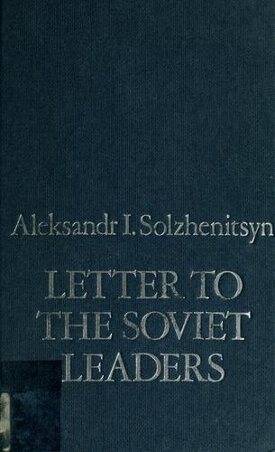
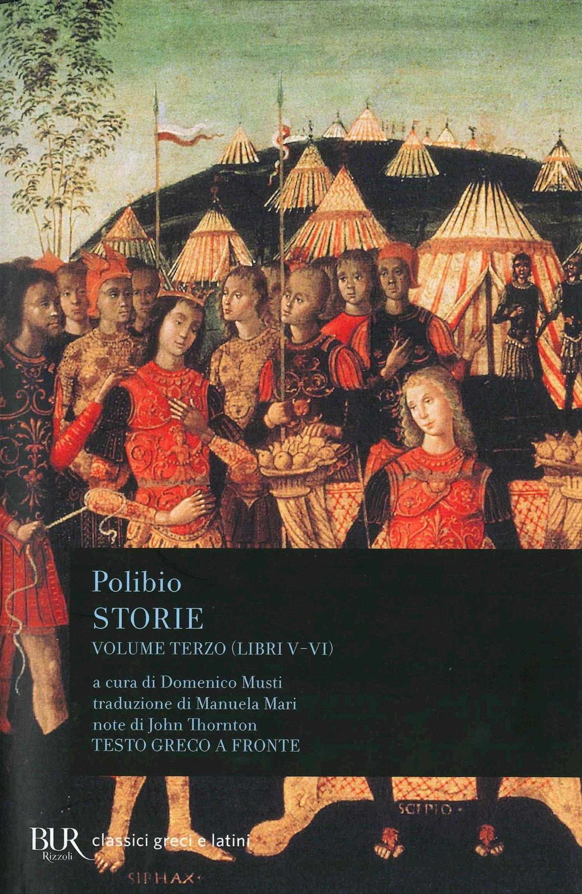
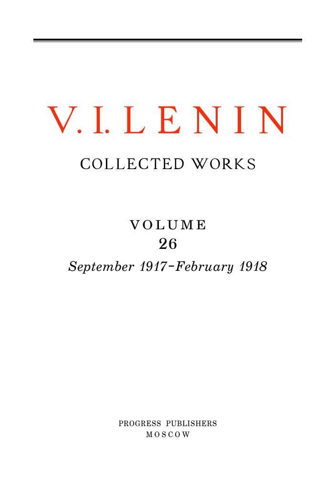
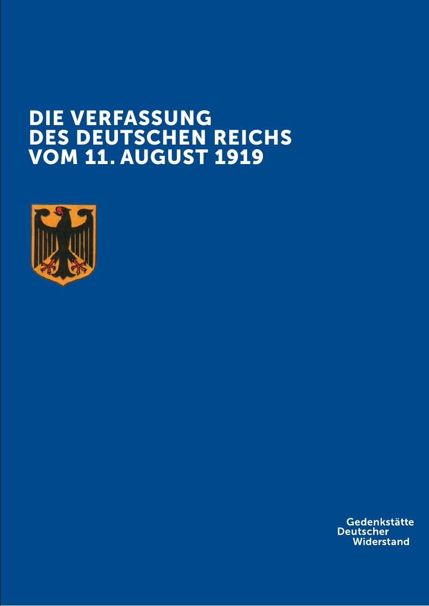

46:29 · 6 OPERE
Arcipelago Gulag di Aleksandr Solženicyn.
Il filo del discorso
Il relatore propone Arcipelago Gulag come una mappa dei meccanismi della tirannide e come esercizio di lettura critica delle notizie. Parte dal racconto introduttivo delle salamandre congelate, che Solženicyn collega alla fame dei detenuti, e segue il tema della memoria, della sorpresa negli arresti e della difficoltà di riconoscere in tempo la perdita delle libertà. Accosta questi passaggi al Processo di Kafka e a un brano delle Storie di Polibio sulla degenerazione della democrazia. Nella seconda parte legge episodi e documenti discussi da Solženicyn, fra cui uno scritto di Lenin, per riflettere su repressione, intellettuali e concentrazione delle funzioni punitive. La conclusione insiste sul valore di libri, pensiero e garanzie giuridiche. I confronti con le restrizioni e la comunicazione del 2020 restano interpretazioni del relatore: la scheda distingue le fonti storiche, le correzioni cronologiche e le analogie da una dimostrazione di identità fra sistemi politici.
I libri nel discorso

Arcipelago Gulag
Copertina: Mondadori · Arcipelago Gulag · edizione di riferimento
Immagine associata all’ISBN di riferimento e controllata visivamente; edizione e traduzione non identificate come quelle citate o lette nel video.
Titolo e autore espliciti; lettura di prefazione e diversi passi del libro come asse principale del contributo.
Passaggio 0:18 ↗ · Fonti e libro ↗
Lettera ai dirigenti dell’Unione Sovietica (Letter to the Soviet Leaders)
Copertina: Letter to the Soviet Leaders, Harper & Row, New York, 1974, traduzione di Hilary Sternberg, 59 pagine, ISBN 0060139137 / 9780060139131. Copertina autentica della rilegatura blu con autore e titolo; il titolo italiano descrive la stessa lettera e non certifica una particolare edizione letta nel video.
Immagine autentica dell’opera, controllata visivamente; l’edizione di riferimento non è attribuita al filmato.
Lettera ai leader sovietici e Solženicyn espliciti: stesso testo della Lettera ai dirigenti dell’Unione Sovietica, senza una edizione italiana identificata.
Passaggio 12:48 ↗ · Fonti e libro ↗
Il processo
Copertina: Adelphi · gli Adelphi, 2020 · edizione di riferimento
Kafka, Il processo e Josef K. nominati nel confronto con l’arresto arbitrario.
Passaggio 16:50 ↗ · Fonti e libro ↗
Storie
Copertina del volume III: libri V–VI: Copertina del volume III, libri V–VI, della edizione BUR Classici greci e latini, a cura di Domenico Musti, traduzione di Manuela Mari, note di John Thornton, testo greco a fronte, ISBN 9788817128438. Il catalogo indica 544 pagine. Volume pertinente perché include il libro VI; non si presume che rappresenti tutti i volumi o la copia del relatore.
Immagine autentica del volume che include il libro citato, con autore, titolo e numerazione leggibili; non copertina di un volume differente e non edizione attribuita al video.
Polibio, Storie e libro VI espliciti, passo VI 9 letto; la copertina scelta è quella del volume che comprende il libro VI.
Passaggio 24:01 ↗ · Fonti e libro ↗
Come organizzare l’emulazione? (How to Organise Competition?)
Frontespizio della raccolta Collected Works 26: Scritto 24–27 dicembre 1917 secondo il calendario russo allora vigente, 6–9 gennaio 1918 nel gregoriano; prima pubblicazione Pravda 17, 20 gennaio 1929. Collected Works, volume 26, Progress Publishers, traduzione Yuri Sdobnikov e George Hanna, prima stampa 1964, successive 1972 e 1977. Immagine del frontespizio della riproduzione digitale 2011 curata da David J. Romagnolo / From Marx to Mao, non una copertina autonoma del saggio.
Pagina 9 del PDF della raccolta, controllata visivamente. La riproduzione digitale dichiara 2011 e le stampe Progress 1964, 1972 e 1977. Il saggio citato è a pagina 404–415; non si attribuisce al video una lettura della raccolta intera.
Lenin, Come organizzare la competizione e gennaio 1918: identificazione del saggio, con titolo italiano corrente emulazione e riscontro nel volume 26.
Passaggio 34:50 ↗ · Fonti e libro ↗
Costituzione di Weimar (Die Verfassung des Deutschen Reichs, 11 agosto 1919)
Copertina della edizione documentale GDW 2018: Testo del 1919 adottato il 31 luglio, firmato l’11 agosto e promulgato il 14 agosto. Copertina autentica della edizione documentale Gedenkstätte Deutscher Widerstand, Berlin 2018, redazione Christin Sandow e Johannes Tuchel, che riproduce il testo del Reichsgesetzblatt 1919. Edizione didattica gratuita, non copertina commerciale del 1919.
Prima pagina del PDF del memoriale con titolo e marchio, controllata visivamente; il colophon a pagina 30 dichiara Berlin 2018. Si distinguono testo costituzionale 1919 e pubblicazione documentale 2018.
Costituzione di Weimar esplicita, con chiarimento sulla distinzione fra sospensione dei diritti e abrogazione formale.
Passaggio 45:07 ↗ · Fonti e libro ↗Minutaggi ricavati da testi automatici, da riascoltare. Le identificazioni probabili sono segnalate accanto ai libri.